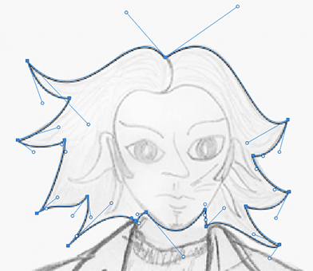

Ten Things I Learned About Norm
Ten Things
These are the ten things that I learned about Norm...
- He camped at Tarpitz in the Carpinteria State Park as a child.
- Weird situations make themselves apparent wherever Norm is, like the velociraptor at Green Thumb Nursery.
- He actually likes to attend his high school reunions up in Mendocino County.
- Norm investigates conspiracies for the federal government, X-Files like.
- Norm is a homebody.
- He travels for work on the Pacific Northwest coast.
- Norm enjoys science fiction.
- He prefers cool, wintry weather to the SoCal sunshine.
- Norm likes to walk on the beach and enjoys the outdoors.
- He is a bit of an introvert.

Original Pencil Sketch - Digitizing with Pen Tool